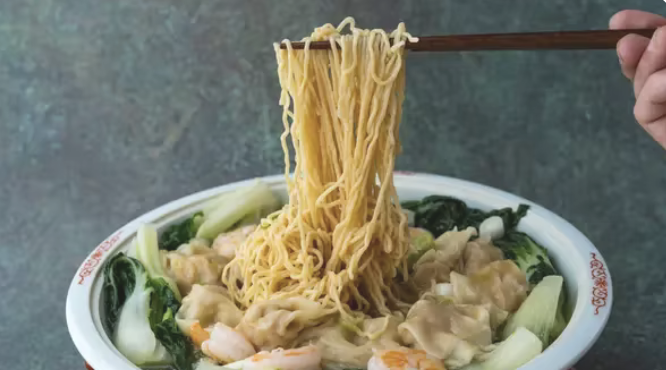

Wonton Noodle Soup Recipe

Description
Ingredients
- 15 oz wonton noodles
- 30 wontons
- 12 oz bok choy
- 1 green onion
- 8 pieces shrimp (peeled, deveined)
- 14 oz chicken broth
- 4 cups water
- 1 tbsp olive oil
- 1 tbsp fish sauce
- 1 tsp seasme oil
- 1 tsp salt
- 0.25 tsp white pepper
Steps
- Chop vegetables.
- Cook noodles.
- Create broth & cook bok choy.
- Cook shrim, transfer bok choy.
- Cook wonton and plate.